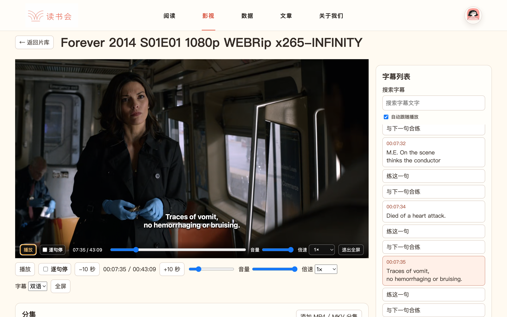
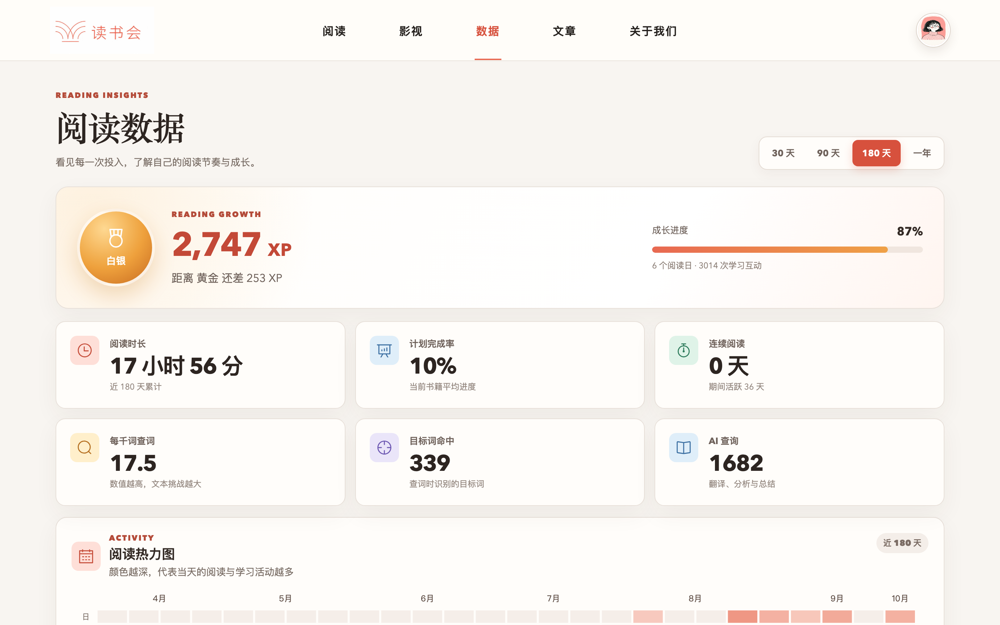

影视
一句一句练对白。
搜索字幕，打开逐句停播。可以练这一句，也可以与下一句合练。

查看阅读、影视练习和数据页面。
书籍分类、我的书籍、笔记和写作入口。
搜索字幕，打开逐句停播。可以练这一句，也可以与下一句合练。

按时间范围查看阅读时长、查词、目标词和阅读活动。

购买方式、版本信息和使用说明会放在这里。现在可以先查看上面的功能和界面。
购买信息待补充界面提供字幕搜索、逐句停播、单句练习和相邻句合练入口。
截图中包含阅读时长、查词、目标词和阅读活动记录。可以选择不同的时间范围。
版本、价格和购买入口确认后，会在本页补充。